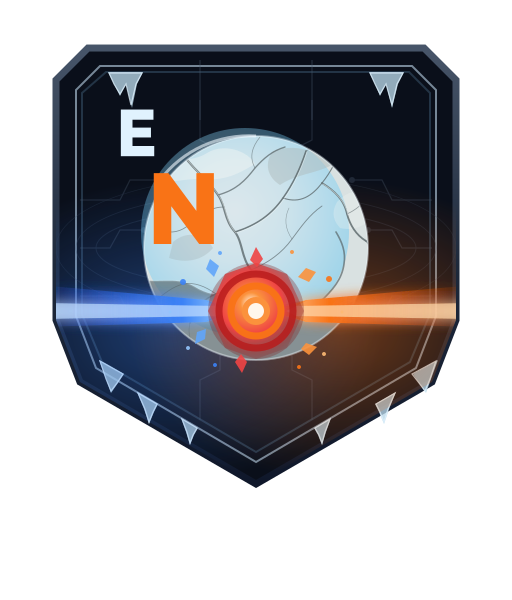

Option B preservation review: supplied Europa moon, icy shield, rear circuitry, blue/orange clash, and EUROPA-dominant wordmark. The wordmark uses Montserrat ExtraBold outlines; all artwork is self-contained vector.
